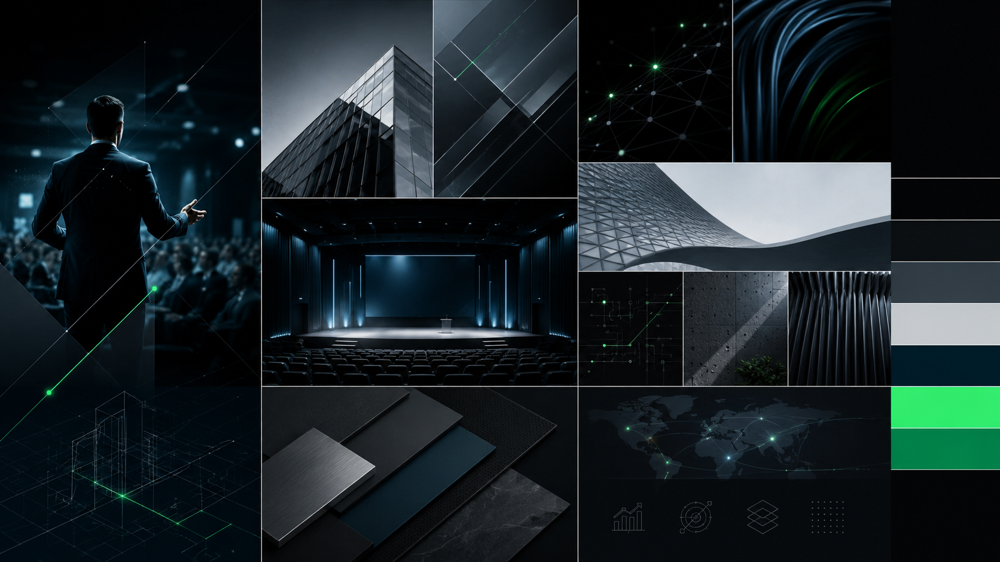

Paulo Crispim
Presença digital, posicionamento de marca e rota visual para aprovação.
Mapa do documento
O que está confirmado, em validação e pendente
| Categoria | Itens | Status |
|---|---|---|
| Confirmado | Nome Paulo Crispim; engenheiro elétrico, palestrante, mentor e consultor; palestras como prioridade; paleta escura com petróleo e verde controlado. | Aprovado como base |
| Em validação | Posicionamento, promessa, complemento profissional, direção visual B como recomendação, kit preliminar. | Recomendação estratégica |
| Pendente | Fotos profissionais, canais de contato, temas oficiais de palestras, provas de autoridade, autorização do guia digital e nível de presença de fé/proposito. | A confirmar |
Direção recomendada
Paulo Crispim conecta engenharia, liderança e desenvolvimento humano para ajudar empresas e profissionais técnicos a evoluírem com clareza, processo e direção.
Esta frase é recomendação estratégica em validação. Ela organiza a presença digital em torno de palestras, mantendo mentorias e consultoria como extensões de autoridade.
Fonte de verdade preliminar
Foco
Palestras corporativas como prioridade comercial.
Base
Engenharia elétrica, liderança, processos e desenvolvimento profissional.
Cuidados
Não transformar inferências em fatos sem validação de Paulo.
| Tema | Direção | Status |
|---|---|---|
| Público corporativo | Empresas, líderes, equipes técnicas e engenheiros. | Em validação |
| Público complementar | Profissionais em crescimento. | Em validação |
| Jornada | Autoridade, temas, prova, contato/reunião/proposta. | Recomendado |
Prioridade comercial
| Serviço | Papel | Mensagem |
|---|---|---|
| Palestras | Principal | Conteúdos para empresas, líderes e equipes técnicas que buscam evolução com clareza. |
| Mentorias | Complementar | Desenvolvimento profissional, disciplina e maturidade de carreira. |
| Consultoria | Complementar | Processos, gestão, liderança e estruturação empresarial. |
Inventário
| Disponível | Uso no dossiê |
|---|---|
| brainstorm.png | Moodboard de direção executiva, tecnológica e editorial. |
| brainstorm 2.png | Sistema visual de energia, fluxo e direção. |
| ideias de logo.png | Referência de estudo visual; não copiada como logo final. |
| Pendente | Impacto |
|---|---|
| Fotos profissionais | Necessárias para capas, site e materiais finais. |
| Biografia, currículo e provas | Necessários para autoridade. |
| Contatos | Necessários para conversão. |
Mensagem central
Uma marca profissional, técnica, humana e corporativa. O tom evita exageros motivacionais e trabalha com clareza, segurança e aplicabilidade.
Engenharia
Base técnica e método.
Liderança
Desenvolvimento de pessoas e direção.
Processos
Clareza, execução e evolução.
Opções para aprovação
| Tipo | Recomendação | Alternativas |
|---|---|---|
| Frase | Une engenharia, liderança e desenvolvimento humano para transformar conhecimento técnico em direção, processo e evolução. | Ajuda empresas e equipes técnicas a evoluírem com clareza, liderança e execução. |
| Promessa | Clareza técnica e humana para equipes que precisam evoluir com direção. | Palestras que conectam liderança, processos e desenvolvimento profissional. |
| Complemento | Palestrante e Consultor em Liderança Técnica | Palestrante Corporativo; Engenharia, Liderança e Desenvolvimento. |
Como a marca deve soar
| Deve ser | Evitar | CTAs |
|---|---|---|
| Clara, segura, técnica sem ser fria, inspiradora sem exagero, corporativa e humana. | Coach genérico, promessas grandiosas, excesso de jargão, tom religioso sem autorização e venda agressiva. | Conversar sobre uma palestra; solicitar proposta; agendar reunião. |
Conteúdo sem copiar obras
As leituras citadas orientam temas possíveis, não textos, frases, capas ou trechos.
Desenvolvimento
Hábitos, disciplina, carreira e evolução.
Liderança
Comunicação, inteligência emocional e relações profissionais.
Propósito
Somente se Paulo aprovar o nível de presença de fé e valores.
Uso estratégico do Guia "Primeiros Passos no Mundo Digital"
O guia pode reforçar didática e contribuição pública, mas não deve ser tratado automaticamente como produto, serviço, isca digital ou material de captação.
| Antes de usar | Status |
|---|---|
| Validar autoria e autorização. | Pendente |
| Definir público e objetivo dentro do site. | Pendente |
| Confirmar se conversa com o foco de palestras corporativas. | Pendente |
Paleta e linguagem
Preto, grafite, cinza moderno, branco frio, azul-petróleo e verde pulsante como energia controlada.

Executiva e técnica
Mais estruturada, geométrica e precisa. Boa para engenharia, consultoria e autoridade institucional.
Em validação
Humana e fluida
Mais conectada a palestras, desenvolvimento, movimento e evolução. É a rota recomendada para validação.
Recomendação estratégica
A versus B
| Critério | A | B |
|---|---|---|
| Sensação | Precisão | Movimento |
| Força | Autoridade técnica | Energia humana |
| Melhor uso | Consultoria/engenharia | Palestras/liderança |
Decisões necessárias
| Decisão | Status atual | Escolha/Aprovação |
|---|---|---|
| Validar frase de posicionamento | Em validação | |
| Escolher complemento profissional | Em validação | |
| Aprovar Proposta A ou B | B recomendada | |
| Autorizar uso do guia digital | Pendente | |
| Confirmar contatos e fotos | Pendente |
Identidade recomendada
O kit usa a Proposta B como recomendação, com versões horizontal, reduzida, monocromática, fundo claro e fundo escuro dentro do SVG.
- Logo principal em SVG.
- Paleta HEX e RGB.
- Tipografia sem serifa.
- Direção de imagens executiva e tecnológica.
- Aplicações para site, apresentação, card, LinkedIn e cartão digital.
Fechamento do ciclo de aprovação
- Paulo revisa briefing, diagnóstico, direcionamento e brief criativo.
- Escolhe ou ajusta a proposta de logotipo.
- Confirma complemento profissional, contatos e nível de presença de propósito/fé.
- Envia fotos profissionais e provas de autoridade autorizadas.
- Após aprovação, o kit deixa de ser "em validação" e passa a ser identidade final.